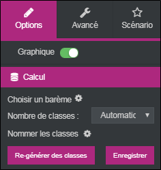
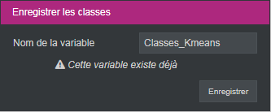
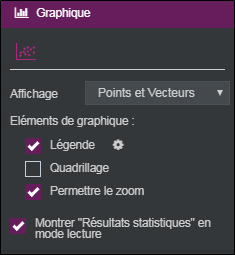
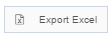
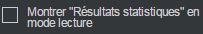

Réaliser une classification K-means
La classification K-means (automatique) permet de décomposer un ensemble d'individus en un nombre n de classes choisi a priori. Il s'agit d'un processus itératif qui produit successivement plusieurs solutions en conservant toujours la meilleure.
La classification automatique revient à confier au logiciel de traitement de données la tâche de placer progressivement les centres de classe, afin que ceux-ci produisent une typologie qui discrimine le mieux possible les groupes ainsi composés.
EXEMPLE : Dans une enquête portant sur le tourisme on veut créer une typologie selon la perception des vacances idéales.

Pour réaliser une classification K-means, procédez comme suit :
-
Cliquez sur le bouton
 .
. -
Sélectionnez Analyse avancée.
-
Cliquez sur Classification K-means.
-
Faites un drag & drop des variables à analyser depuis la liste des variables disponibles.

Une fois la classification K-means réalisée, il est possible de changer les variables en sélectionnant l’analyse et en cliquant sur  ou en faisant clic droit éditer sur l’analyse.
ou en faisant clic droit éditer sur l’analyse.
Dans l’onglet option, catégorie calcul, vous pouvez choisir un barème et définir le nombre de classes.

-
Nombre de classes : Le nombre de classes est défini de manière automatique, mais il est possible de le modifier, pour ce faire : Cliquez sur le menu déroulant, sélectionnez l'option fixé, définissez le nombre de classes et cliquez sur le bouton Re-générer des classes.
-
Nommer les classes : Pour nommer les classes cliquez sur
 puis saisissez les noms.
puis saisissez les noms. -
Générez une variable fermée contenant les classes créées en cliquant sur le bouton Enregistrer.



-
Choisissez d'afficher les Points et Vecteurs ou uniquement les Points sur le graphique.
-
Effectuez des zooms sur certaines parties afin de voir de plus près une zone intéressante lors de la prévisualisation. Pour ce faire, cochez la case Permettre le zoom.

Dans la prévisualisation il faut placer le curseur sur une partie de la carte, glisser-déposer et faire un carré autour de la zone à zoomer. Ensuite il sera possible d’annuler le zoom en cliquant sur le bouton  .
.
Il est possible d’afficher plus d’analyses concernant les modalités de l’analyse en sélectionnant l’onglet résultats statistiques en dessous de la carte. Ceux-ci pourront être exportés vers Excel à partir de l’onglet

.
Les résultats statistiques peuvent être affichés lors de la prévisualisation en sélectionnant montrer « Résultats statistiques » en mode lecture dans les éléments de graphique.


Les éléments numériques et statistiques qui permettent d'interpréter la classification et d'évaluer sa qualité :
-
La Caractérisation des classes donne la répartition des individus dans chaque groupe et les variables qui permettent de caractériser les classes.
-
Les indicateurs de qualité de la classification rappellent la répartition des effectifs entre les classes et leur homogénéité.
-
Le détail des classes indique les valeurs moyennes des classes sur chaque variable intégrée à l'analyse. Les couleurs vertes et rouges repèrent les surreprésentations et les sous-représentations.